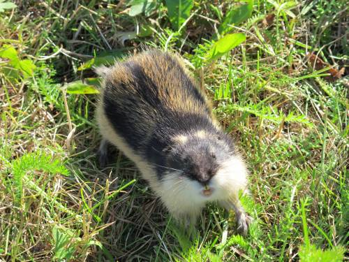

Glimt fra artsmangfoldet
Nord-Norge
Slåttemark med nyserot Veratrum album, Smalfjordsletten, Fi Tana 23.august.

Åkerbær Rubus arcticus i slåttemark Smalfjordsletten, Fi Tana 23.august

Tanatimian Thymus serpyllus ssp. tanaënsis, Leirpollen, Fi Tana, 23.august.

Sibirgrasløk Allium schoenoprasum ssp. sibiricum, Fi Nesseby 16. august.

Russemjelt Oxytropis campestris ssp. sordida, Fi Vadsø 15. august.
Russekjeks Conioselinum tataricum, Neverfjordklubben, Fi Kvalsund 25. august.
Brunøyet vokssopp Hygrocybe virginea var. fuscescens, Nordeidet på Reinøya, Tr Karlsøy 28. august. Dette er en stor og flott naturbeitemark der Virve Ravolainen tidligere har tatt hovedfag på beitemarkssopper.

Sint lemen Lemmus lemmus, en av veldig mange på Bugøynes kirkegård, Fi Sør-Varanger 21. august. Omtrent alle grasmarker i Finnmark var kraftig bearbeidet av smågnagere i 2011.

Pomorstjerneblom Stellaria hebecalyx (CR) ved Vardøhus festning, Fi Vardø 15 august.
Rogaland

I fuktige skoger forekommer lavarten Arthonia arthonioides på bjørkestammer, her fra Dokkebekken i Dirdal, Gjesdal, 27. mai.

Grå buktkrinslav Hypotrachyna laevigata (EN), forekommer relativt sjelden i regnskog, som her ved Nonsknuten i Høle, Sandnes 29. mai.

Vasshalemose, Isothecium holtii (VU), i bekk ved Grov i Sokndal 31. mai.
De grågrønne trådaktige skuddene på barken av denne bjørka er dvergperlemose Microlejeunea ulicina, fotografert ved Krusafjellet i Høle, Sandnes 1. juni.
Småhinnemose Plagiochila punctata, forekommer her og der på bergvegger i fuktig nordvendt regnskog. Her fra Vier ved Hommersåk, Sandnes, 1. juni.

Stor og fin tue med purpurmose Pleurozia purpurea, Kjervoll i Dirdal, Gjesdal 27. mai.
Midt-Norge

2. funn i Norge av skrubbrødskivesopp Entoloma scabiosum (NT) ble gjort i MR Nesset. Eikesdalen 17. september, dette er samtidig solid nordgrense for arten.
Grynporelav Sticta limbata i Julsundet, MR Aukra 19. juli.
Gullprikklav Pseudocyphellaria crocata (VU) har en del bergforekomster på ytterkysten i sørlige del av Møre og Romsdal. Dette er fra en tidligere kjent lokalitet på nordsida av Gossen i MR Aukra, 5. juli.
Havburkne Asplenium marinum (NT) finnes noen steder på ytterkysten av Møre og Romsdal, her fra Dollsteinhola på Sandsøya i MR Sande 4. juni.

Et lite glimt fra trøffeljakta i Eikesdalen høsten 2011: Hymenogaster decorus (dvergknollslekta, uten norsk navn) er gravd opp under hassel i bergerota ved MR Nesset: Rangåfjellet 17. september. Dette er samtidig nordgrense.
Irsk myrklegg Pedicularis sylvatica ssp. hibernica (EN) skiller seg fra kystmyrklegg bl.a. ved å være kraftig håret. Planten på bildet ble fotografert på sørvestsida av Sandsøya i MR Sande 4. juni.

Østersurt Mertensia maritima har en god bestand i Horremsbukta, MR Aukra, 4. juli.
Reinrose Dryas octopetala fotografert på en av de mest kystnære forkomstene på Nordvestlandet, ut mot havet på Hornet, Sandsøya i MR Sande 3. juli.
Sylsmåarve Sagina subulata er en ytterkystplante på Nordvestlandet, bildet er tatt på sørvestsida av Sandsøya i MR Sande 4. juni.

Seksflekket bloddråpesvermer Zygaena filipendulae er relativt vanlig på kysten av Møre og Romsdal. Her er den avbildet på Gossen, MR Aukra 11. juli.

Gullrublom Draba alpina (NT) fra Gjevilvasskamman, ST Oppdal 16. juli.

Blyttsveve Hieracium blyttianum fotografert på Langbakksetra, Gjøra i MR Sunndal 15. juli. Her ble den funnet for over 100 år siden av Ove Dahl, og vokser her fortsatt så lenge skjøtselen fortsetter. Denne sveva er meget sjelden og sto tidligere på rødlista (2006), men ble ikke vurdert i 2010-rødlista.

Svartkurle Nigritella nigra (EN) fotografert på dens høyestliggende lokalitet i Norge, Gjevilvassdalen i ST Oppdal, ca. 1260 meter over havet.
Styvingstrær og høstingsskog Sør-Norge
Sammen med Harald Bratli, NINA, har jeg studert hva som vokser på gamle styvingstrær av alm, ask og lind en del steder i Sør-Norge (Østlandet-Nordmøre), nedenfor er noe av det vi fant.

Kalkraggmose Anomodon viticulosus danner ofte store matter ved basis av styva almetrær, her fra SF Luster: Mørkrisdalen 8. september.

Kveilmose Pterogonium gracile er relativt vanlig på styvingstrær på Vestlandet, bildet er tatt på ask i SF Balestrand: ved Raundalen 10. september.
Klosterlav Biatoridium monasteriense (NT) på styva alm Ro Hjelmeland Målandsdalen 30. september.

Blådoggnål Sclerophora farinacea (VU) på styva alm i SF Luster: Mørkrisdalen 8. september.
Thelopsis rubella (VU) er en lavart med kystuybredelse på gamle edellauvtrær, her på styva alm ved Ho Osterøy: Kløvneset 15. september.

Armillaria lutea er en honningsopp som ofte finnes på gamle edellauvtrær, her funnet på styva ask i Ho Kvam: Strandadalen ved Vasshaugen 14. september.

Løvbarkskorpe Dendrothele alliacea (NT) er en relativt typisk art på bark av gammel, styva alm som her i Ro Hjelmeland Målandsdalen 30. september.
Almebroddsopp Hymenochaete ulmicola (VU) er også en relativt typisk art på bark av gammel, styva alm som her i Ho Odda: Buerdalen: Stidleskor 1. oktober.

Almekullsopp Hypoxylon vogesiacum (NT) er i Norge en typisk art på død ved av alm, og ofte på nedramla styvingstrær. Bildet er fra MR Nesset: Ljåstranda i Eikesdalen 11. oktober.

Anders Wollan beundrer en almeknippesopp Hypsizygus ulmarius tre meter oppe i ei styva alm MR Nesset Eikesdalen: under Rangåfjellet 17. september.

Pelskjuke Inonotus hispidus (EN) har en utbredelse konsentrert hovedsakelig til indre Sogn hvor den vokser på styva ask, her tatt på SF Leikanger: Grinde 9. september.
Narrepiggsopp Kavinia himantia (NT) vokser gjerne blant moser på bark av styva alm og ask. Her er den fotografert på styva alm i Ho Granvin: Folkedal 15. september.

Rynkesagsopp Lentinellus vulpinus (NT) er en ganske sjelden art, her fotografert på styva alm i SF Luster: Mørkrisdalen 8. september.

Et kjempeeksemplar av flat begersopp Peziza repanda, som var over 25 cm i diameter og ble funnet på en nedramla styvingsalm i Ho Voss: Teigdalen 12. september.
Kastanjestilkkjuke Polyporus badius (VU) er en av almespesialistene blant soppene, og er ganske sjelden. Bildet er fra MR Nesset: Ljåstranda 18. september.
Ferskenpote Rhodotus palmatus (EN) er en meget sjelden, almetilknyttet vedboende sopp som er funnet i noen av de beste områdene for styva alm i Norge, her fra SF Luster Mørkrisdalen 8. september.